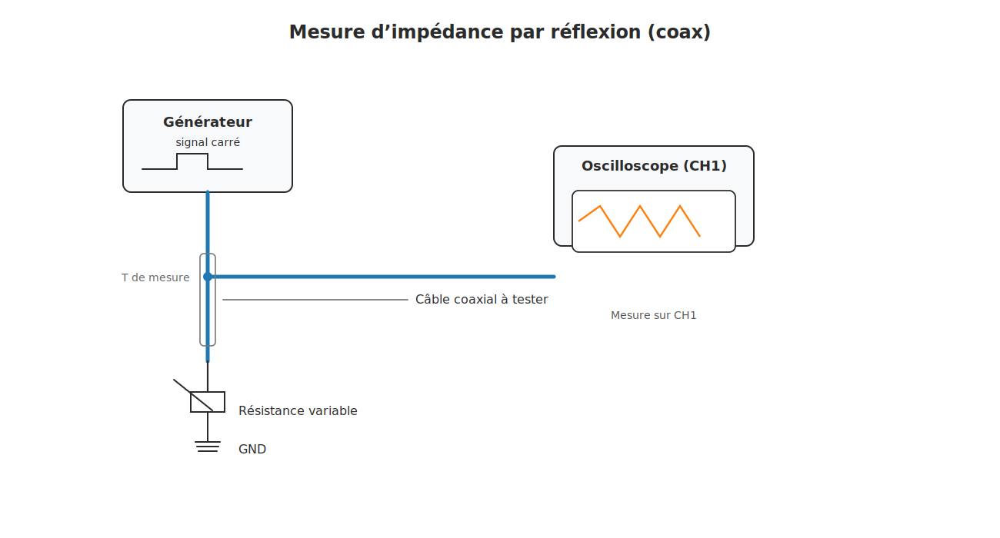

Mesurer l'impédance d'un câble coaxial avec un oscilloscope
Voici une méthode simple pour mesurer l’impédance caractéristique Z₀ d’un câble coaxial, à l’aide d’un générateur de signaux, d’un oscilloscope et d’une résistance variable.
1) Matériel nécessaire
- Générateur de signaux (carré rapide)
- Oscilloscope
- Câble coaxial à tester
- Résistance variable (potentiomètre ou boîte à décades)
- Adaptateurs / connecteurs T BNC
2) Schéma de principe
3) Méthode
- Branche le générateur et l’oscilloscope en parallèle via un T BNC.
- Connecte le câble à tester à l’autre sortie du T.
- Laisse l’autre extrémité du câble ouverte, avec la résistance variable entre âme et masse.
- Envoie un signal carré rapide dans le câble.
- Observe l’oscilloscope : un rebond (pic) indique un mauvais appairage d’impédance.
- Ajuste la résistance jusqu’à disparition de la réflexion.
4) Résultat
La valeur de la résistance qui supprime la réflexion correspond à Z₀ du câble (ex. 50 Ω ou 75 Ω).
💡 Astuce : Utilise des câbles courts pour le générateur et l’oscillo afin de réduire les erreurs dues aux longueurs supplémentaires.